Competition and mutualism can be understood without much attention to the sizes of the species involved. But predation is quite different. Think of a producer, the prey, and a consumer, the predator. When the consumer is extremely large and the producer very small, as with a whale and krill, the relationship is called filter feeding. There the predator kills the prey. When the producer and consumer are roughly matched in size, they are called predators and prey. When the producer is much smaller than the consumer, but still independently mobile, the relationship is called parasitism. And when the consumer is much smaller still, and has difficulty moving around on its own, the relationship is called infection and disease. Symptoms of disease are part of the ecology of disease. In parasitism and disease, the consumer often does not kill the producer.
12.1 Further examples of predation
Amazing mechanisms for both capturing prey and avoiding predators have been discovered through evolution. Fulmar chicks, for example, can direct “projectile vomit” at predators approaching the nest too closely (Figure 12.1). This is not just icky for the predator. By damaging the waterproofing of an avian predator’s feathers, this ultimately can kill the predator. The chick’s projectile vomit is thus a lethal weapon.
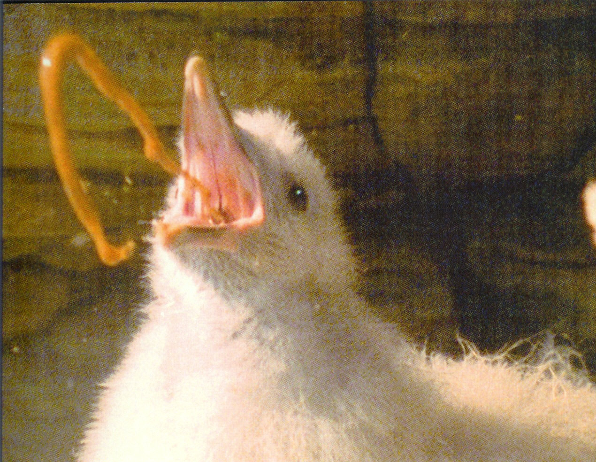
Figure 12.1: Fulmar chick with projectile vomit as predator defense.
One of the most remarkable predatory weapons is that of pistol shrimp (Figure 12.2). These shrimp have one special claw adapted to cavitation, and are capable of shooting bullets at their prey; colonies of these shrimp are loud from the sound of these bullets. But where does an underwater crustacean get bullets? Actually, it creates them from nothing at all—from cavitation. If you’ve ever piloted a powerful motorboat and pushed the throttle too hard, or watched a pilot do so, you’ve seen the propellers start kicking out bubbles, which look like air bubbles. But the propellers are well below the water line, where there is no air. The propellers are in fact creating bubbles of vacuum—separating the water so instantly that there is nothing left in between, except perhaps very low density water vapor. Such bubbles collapse back with numerous blasts, each so powerful that it rips pieces of bronze off the propeller itself, leaving a rough surface that is the telltale sign of cavitation.
A pistol shrimp snaps its pistol claw together so quickly that it creates a vacuum where water used to be. With the right circulation of water around the vacuum bubble, the bubble can move, and a shrimp can actually project its bullet of vacuum toward its prey. When the bubble collapses, the effect is like thunder attending a lightning bolt, when air snaps together after the lightning has created a column of near-vacuum (NatGeo video). But the consequences are quite different in water. While a loud sound might hurt the ears of a terrestrial animal, the sound does not rip apart the fabric of the animal’s body. This is, however, what intense sounds in water can do, traveling through water and through the water-filled bodies of animals. In effect, pistol shrimp shoot bullets that explode near their prey and numb them into immobility. Somehow evolution discovered and perfected this amazing mechanism!
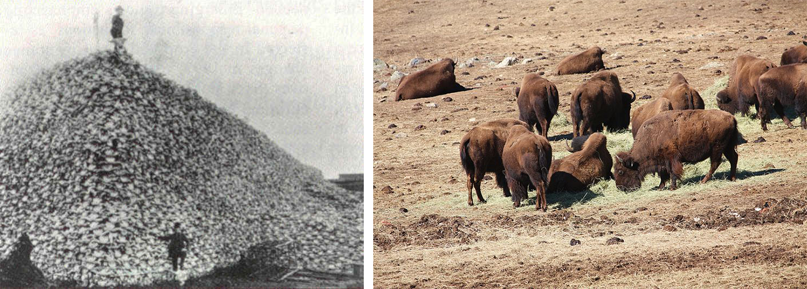
Figure 12.3: Rifle-carrying humans shoot lead bullets—bison bones and remnant herd.
The ultimate weapons of predation, however, are those of our own species. Figure 12.3 (right) shows a remnant bison herd, a few hundred of the hundreds of millions of bison that migrated the plains not many generations ago. No matter how vast their numbers, they were no match for gunpowder and lead bullets, and they dropped to near extinction by the beginning of the twentieth century. The image at the left illustrates the epic efficiency of lead bullets by showing a nineteenth-century pile of bison bones, with members of the predator species positioned atop and aside.
12.2 Ecological communities are complex
Before proceeding with simplified models of predation, we want to stress that ecological communities are complex (Figure 12.4). Fortunately, progress in understanding them comes piece by piece. Complex food webs, like the one illustrated in the figure, can be examined in simpler “motifs.”
You have seen in earlier chapters that there are two motifs for a single species: logistic and orthologistic, with exponential growth forming a fine dividing line between them. And in the prior chapter, you saw three motifs for two species: predation, competition, and mutualism.
Later you will see that there are exactly forty distinct three-species motifs, one of which is two prey pursued by one predator. This is called “apparent competition” because it has properties of competition.
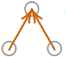
12.3 Predator–prey model
For the next several chapters we will consider two species, starting with one predator and one prey. Figure 12.5 depicts this situation, with one line sloping down and the other up.
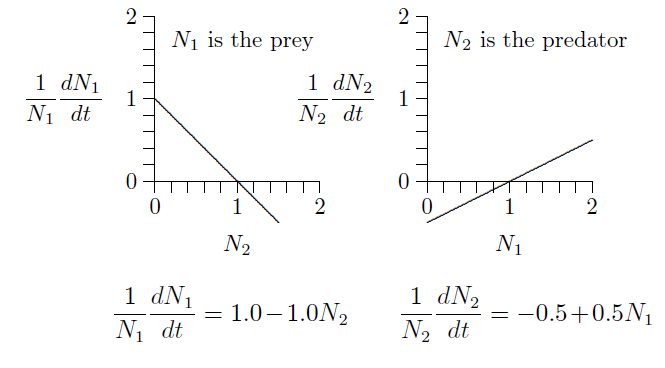
Figure 12.5: Predator–prey interactions with corresponding equations.
The graph on the left describes the prey, because its numbers \(N_1\) are reduced when the numbers of predator, \(N_2\), increase. Likewise, the graph on the right describes the predator, because its numbers, \(N_2\), increase with the density of its prey, \(N_1\). The equations of growth are revealed by the slopes and intercepts of the two lines.
Since these are both straight lines, \(y=mx+b\), the equations can be written down simply from the geometry. The intercept on the left is \(+1\) and the slope is \(-1\). The intercept on the right is \(-1/2\) and its slope is \(+1/2\). The equivalent equations of the two lines appear below the graphs.
These specific equations can be generalized using symbols in place of actual numbers, writing \(r_1\), \(s_{1,2}\), \(r_2\), and \(s_{2,1}\) for the intercept \(+1.0\) and slope \(-1.0\) on the left and the intercept \(-0.5\) and slope \(+0.5\) on the right, as follows.
Volterra arrived at the equation rather differently than we did, with a growth rate \(r\) for the prey, reduced by a rate \(\alpha\) for each encounter between predator and prey, \(V\!\cdot\!P\), and with a natural death rate \(q\) for predators and compensatory growth rate \(\beta\) for each encounter, \(V\!\cdot\!P\), between predator and prey.
To see the equivalence, divide the first equation through by \(V\) and the second by \(P\), then set \(V=N_1\), \(P=N_2\), \(r=r_1\), \(q=-r_2\), \(\alpha=-s_{1,2}\), \(\beta=s_{2,1}\). The Lotka–Volterra formulation will be revealed to be just the \(r+sN\) equations in disguise.
Figure 12.5 exposes the basic predator–prey equations from geometry, which reveal the unity of the equations of ecology, as you saw in Equation 5.2 (Chapter 5). That analysis revealed a form of one-dimensional equation not considered in ecological textbooks—the orthologistic equation—and which is needed for understanding human and other rapidly growing populations.
Now analyze these equations a bit. Suppose predator and prey densities are both 1, say 1 individual per hectare (\(N_1=N_2=1\)). Substitute 1 for both \(N_1\) and \(N_2\). What are the growth rates?
The population growth is zero for both species, so the populations do not change. This is an equilibrium.
This can be seen in the graphs below. The fact that both growth rates, \(1/N_1\,dN_1/dt\) and \(1/N_2\,dN_2/dt\), cross the horizontal axis at \(N_1=N_2=1\) (position of the dots) means that growth stops for both. This is called an equilibrium, a steady state, or, sometimes, a fixed point.
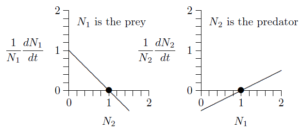
But what will happen if both populations are 2, say 2 individuals per hectare?
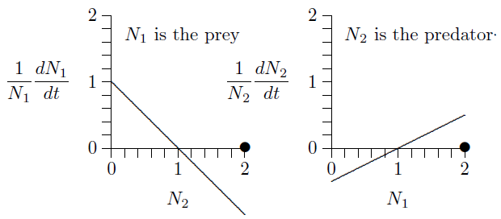
The prey growth rate, \(1/N_1\,dN_1/dt\), is negative at \(N_2=2\) (the line is below the horizontal axis) and the predator growth rate, \(1/N_2\,dN_2/dt\), is positive at \(N_1=2\) (the line is above the horizontal axis). So the prey population will decrease and the predator population will increase. Exactly how the populations will develop over time can be worked out by putting these parameters into Program 8.1 in Chapter 8. Here is what it shows.
Code
# Same set-up as Program 8.1, with the parameters of Figure 12.5N1 <-2; N2 <-2r1 <-1.0; r2 <--0.5s11 <-0; s12 <--1.0; s21 <-0.5; s22 <-0t <-0; dt <-0.0001; tmax <-30; step <-0n_out <-round(tmax / dt /1000) +1finalpop <-data.frame(t =numeric(n_out), N1 =numeric(n_out), N2 =numeric(n_out))finalpop[1, ] <-c(t, N1, N2); k <-1for (i in1:round(tmax / dt)) { dN1 <- (r1 + s11 * N1 + s12 * N2) * N1 * dt dN2 <- (r2 + s21 * N1 + s22 * N2) * N2 * dt N1 <- N1 + dN1; if (N1 <0) N1 <-0 N2 <- N2 + dN2; if (N2 <0) N2 <-0 t <- t + dt; step <- step +1if (step ==1000) { # record every 1000th step k <- k +1 finalpop[k, ] <-c(t, N1, N2) step <-0 }}finalpop <- finalpop[1:k, ]ggplot(finalpop, aes(x = t)) +geom_line(aes(y = N1), colour = eco_cols[["blue"]]) +geom_line(aes(y = N2), colour = eco_cols[["red"]]) +annotate("text", x =9.10, y =3.03+0.25, label ="N[1] ~ (prey)",parse =TRUE, colour = eco_cols[["blue"]], hjust =-0.1) +annotate("segment", x =9.10, y =3.03+0.25, xend =9.10, yend =3.06,colour = eco_cols[["blue"]], arrow = arr) +annotate("text", x =10.51, y =2.29+0.25, label ="N[2] ~ (predator)",parse =TRUE, colour = eco_cols[["red"]], hjust =-0.1) +annotate("segment", x =10.51, y =2.29+0.25, xend =10.51, yend =2.32,colour = eco_cols[["red"]], arrow = arr) +scale_x_continuous(breaks =seq(0, 30, by =5), limits =c(0, 30)) +scale_y_continuous(limits =c(0, 3.5)) +labs(x =expression("Day ("*italic(t) *")"),y ="Population density (per ml)")
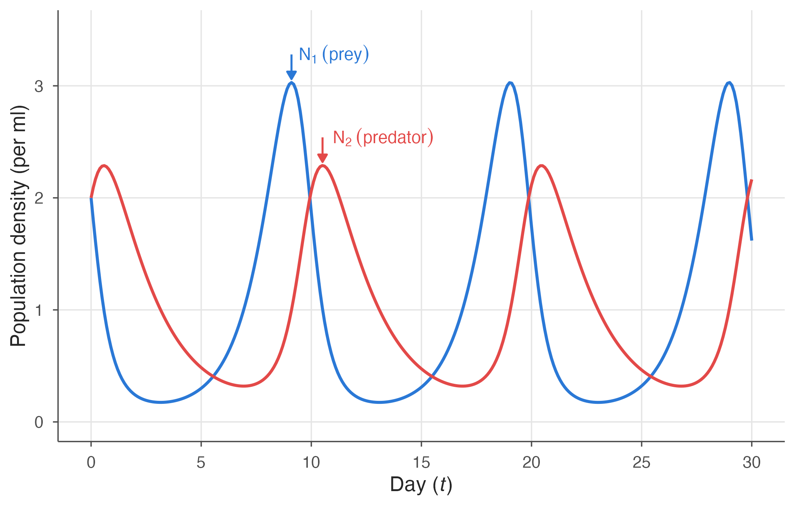
Figure 12.6: Dynamics of the predator–prey system of Figure 12.5 as calculated by Program 8.1.
For comparison, here is what early experimenters such as Gause and Huffaker showed for populations of protozoa, mites, and other small systems in the middle of the twentieth century:
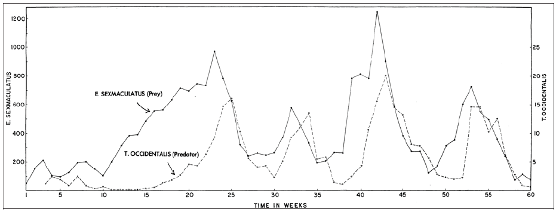
Figure 12.7: Dynamics in an experimental predator–prey system conducted by C. B. Huffaker in the 1950s with two species of mite.
The dynamics here are much the same as those shown in the calculated version of Figure 12.6 and the experimental version of Figure 12.7, but with stochasticity overlayed on the experimental system. Experimenters, however, had difficulty achieving continual cycling. In simple conditions, the predators would find the prey and eat every last one, and then the predators themselves would all die. Continual cycling could be achieved by providing the prey with places to escape, or making it difficult for the predators to move around the environment.
12.4 Phase space
The cycling can be understood better in phase space, where the densities of the two species are represented as two-dimensional points.
Code
phase_space_plot <-ggplot() +scale_x_continuous(breaks =0:3, limits =c(0, 3.5), expand =c(0, 0)) +scale_y_continuous(breaks =0:2, limits =c(0, 2.5), expand =c(0, 0)) +labs(x =expression(N[1] ~ (prey)), y =expression(N[2] ~ (predator)))# Open circle marking the interior equilibriumequilibrium <-annotate("point", x =1, y =1, shape =1, size =3, stroke =1,colour ="grey15")# Isoclines: prey (horizontal, blue) and predator (vertical, red)prey_isocline <-annotate("segment", x =0, xend =3.5, y =1, yend =1,colour = eco_cols[["blue"]], linewidth =0.8)pred_isocline <-annotate("segment", x =1, xend =1, y =0, yend =2.5,colour = eco_cols[["red"]], linewidth =0.8)phase_space_plot + equilibrium +annotate("point", x =1.5, y =0.5, shape ="+", size =7,colour = eco_cols[["blue"]])
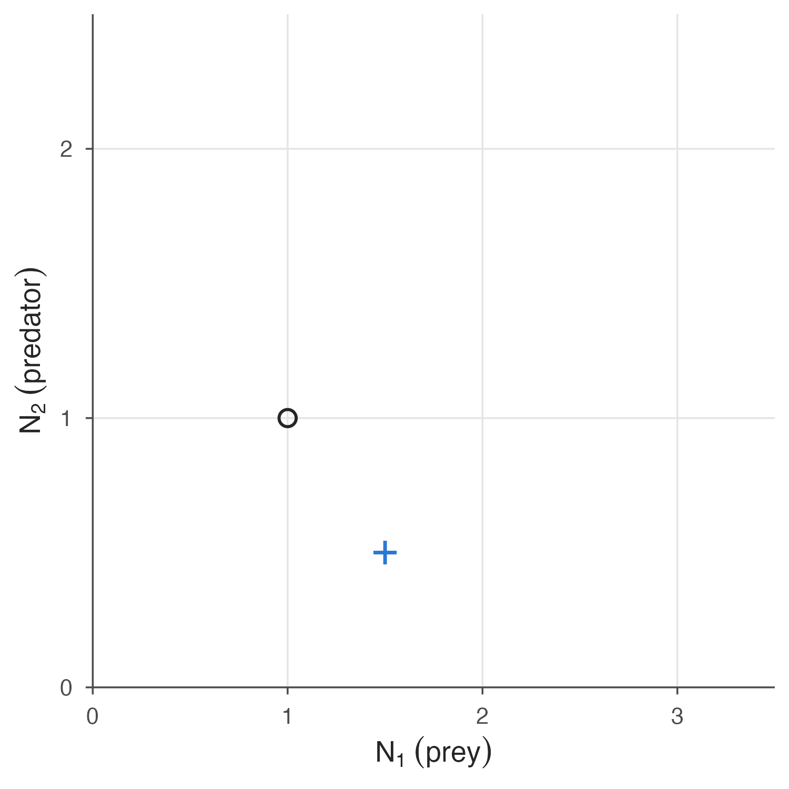
Figure 12.8: Predator–prey phase space. The circle marks an equilibrium where growth of both predator and prey stops. The plus sign marks a population value of \(N_1=1.5\), \(N_2=0.5\).
For example, as explained in Chapter 10 (Figure 10.1), if the prey population is 1.5 and the predator population is 0.5, the population will be 1.5 units to the right on the horizontal axis and 0.5 units up on the vertical axis, at the location of the blue plus sign in the graph.
Where does the predator population cease to grow? In the equation
it ceases to grow where \(0 = r_2 + s_{2,1} N_1\), or \(N_1=-r_2/s_{2,1}\). With \(r_2=-0.5\) and \(s_{2,1}=0.5\), this is a vertical line—the predator isocline—at \(N_1=1\), as in Figure 12.9.
Code
# Vertical (predator) arrows at four sample pointsd <-0.25pts <-data.frame(x =c(0.5, 1.5, 1.5, 0.5), y =c(0.5, 0.5, 1.5, 1.5))pred_dir <-ifelse(pts$x <1, -1, 1) # predators fall left of N1 = 1, rise right of itprey_dir <-ifelse(pts$y <1, 1, -1) # prey rise below N2 = 1, fall above itpred_arrows <-annotate("segment", x = pts$x, y = pts$y, xend = pts$x,yend = pts$y + d * pred_dir, colour ="grey20", arrow = arr)prey_arrows <-annotate("segment", x = pts$x, y = pts$y, xend = pts$x + d * prey_dir,yend = pts$y, colour ="grey20", arrow = arr)both_arrows <-annotate("segment", x = pts$x, y = pts$y, xend = pts$x + d * prey_dir,yend = pts$y + d * pred_dir, colour ="grey20", arrow = arr)phase_space_plot + pred_isocline + pred_arrows + equilibrium
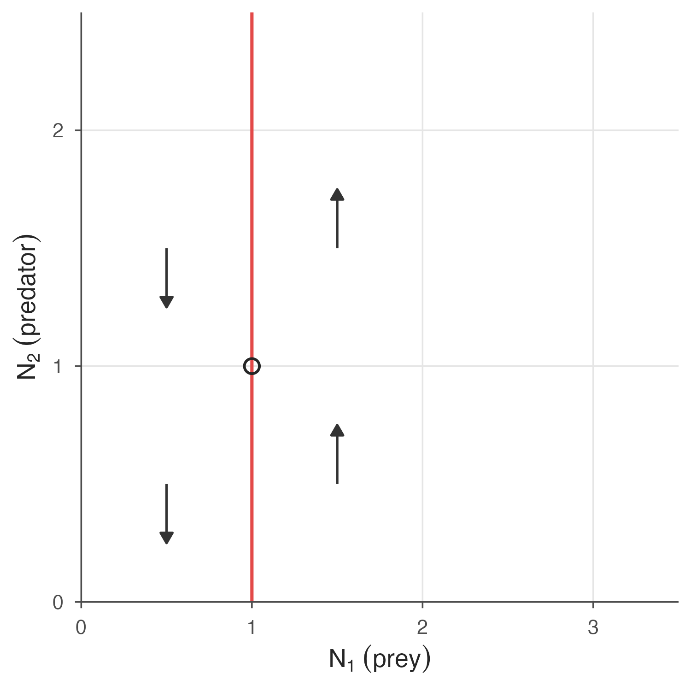
Figure 12.9: The predator isocline, at which the predator population ceases to grow.
To the left of the isocline, prey are sparse and predators decline, as indicated by the downward arrows. To the right of the isocline, in contrast, prey are abundant and predators can increase, as indicated by the upward arrows.
Likewise, where does the prey population cease to grow? In the equation
it ceases to grow where \(0 = r_1 + s_{1,2} N_2\), which means \(N_2=-r_1/s_{1,2}\). With \(r_1=1\) and \(s_{1,2}=-1\), this is a horizontal line—the prey isocline—at \(N_2=1\).
Code
phase_space_plot + prey_isocline + prey_arrows
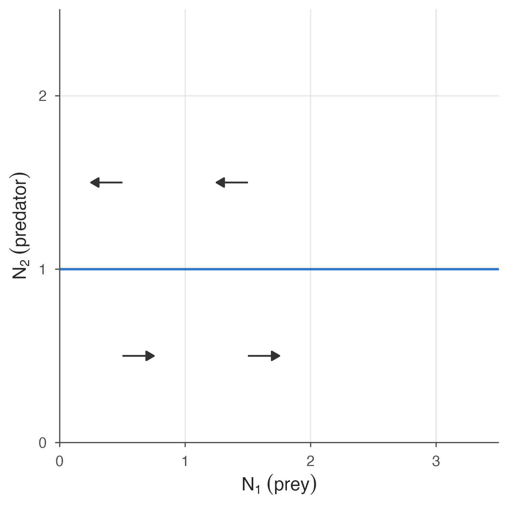
Figure 12.10: The prey isocline, at which the prey population ceases to grow.
Below the isocline, predators are sparse so prey can increase, as indicated by the arrows pointing right. Above the isocline, in contrast, predators are abundant and prey decrease, as indicated by the arrows pointing left. Putting Figure 12.9 and Figure 12.10 together gives Figure 12.11, which shows rotation in the combined arrows.
Figure 12.11: Both isoclines, with both sets of arrows combined, showing the cycling.
Here the rotation can be deduced by thinking about the dynamics of predator and prey. The rotation is corroborated by using the eigenvalue methods of Chapter 10 to calculate the eigenvalues. The eigenvalues of the interior equilibrium turn out to be \(0\pm0.707i\), a number with both real and imaginary parts. The existence of an imaginary part, \(\pm0.707i\), implies cycling. The real part, 0, means that eigenvalues alone cannot determine the stability—it could be stable, unstable, or neutral. In fact, for this particular case with no self-limitation, deeper mathematical examination shows that the stability is neutral. The dynamics will rotate indefinitely, maintaining whatever cycle it started on.
Code
day_labels <-data.frame(label =as.character(0:10),x =c(2, 0.591851, 0.240695, 0.175371, 0.198726, 0.30022, 0.538703,1.05014, 2.01495, 3.01349, 1.8691),y =c(2, 2.18264, 1.59416, 1.06725, 0.70875, 0.4850557, 0.36001,0.3198912, 0.408964, 0.902564, 2.06225))# Trajectory of Figure 12.6 in the phase planecir_coord <-read.csv("data/fig12_12_circle_coor.csv", fileEncoding ="UTF-8-BOM")names(cir_coord) <-c("x_coor", "y_coor")cycle_path <-geom_path(data = cir_coord, aes(x = x_coor, y = y_coor),colour = eco_cols[["blue"]], alpha =0.6)phase_space_plot + prey_isocline + pred_isocline + cycle_path + equilibrium +annotate("text", x = day_labels$x, y = day_labels$y, label = day_labels$label,colour = eco_cols[["red"]], fontface ="bold", size =5) +annotate("text", x =2, y =1.55, label ="Day", colour = eco_cols[["red"]],fontface ="bold", size =4.5) +annotate("segment", x =2, y =1.62, xend =2, yend =1.92,colour = eco_cols[["red"]], arrow = arr)
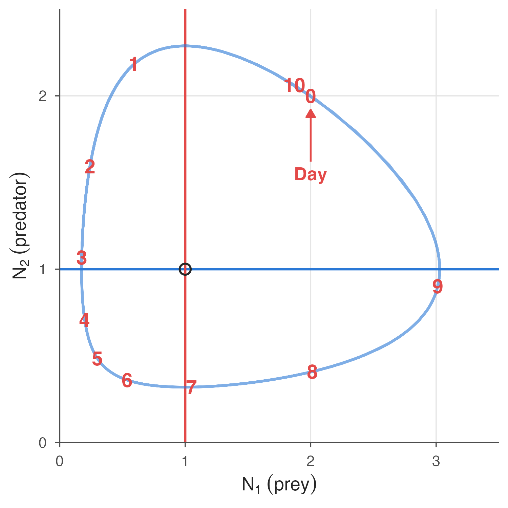
Figure 12.12: Days 1 through 10 marked on the cycle of Figure 12.6.
Taking all the data from Figure 12.6 and plotting \(N_1\) versus \(N_2\) gives Figure 12.12. The process starts at day 0 with \(N_1=N_2=2\). One day later, prey have dropped to \(N_1\approx0.5\) and predators have increased to \(N_2\approx2.2\), marked by the red numeral 1 on the cycle. (By the symbol ‘\(\approx\)’, we mean “approximately equal to.”) Two days later, prey have dropped to \(N_1\approx0.2\) and predators have dropped to \(N_2\approx1.0\), marked by the numeral 3. With predators at relatively low levels, prey then start to increase and, four days later, have reached \(N_1\approx1.0\), while predators have dropped further to \(N_2\approx0.3\), marked by the numeral 7. Two days later, prey have increased to \(N_1\approx3.0\) and predators have increased to \(N_2\approx1.0\), marked by the numeral 9. Finally, one day later the cycle begins to repeat, as marked with the numeral 10. This is another way of showing the cycling of Figure 12.6.
In Figure 12.13—a flow diagram—the entire phase space can be filled with arrows to show how cycling proceeds everywhere. The path of Figure 12.6, displayed in Figure 12.12, is overlayed in blue.
12.5 Assumptions of the basic model
This basic model of interacting predators and prey reveals the tension between population growth and decline, and shows the kind of cycling that characterizes predator–prey systems. It has, however, a number of simplifying assumptions that can be relaxed in more detailed studies, including the following:
The predator lives only on this prey, and perishes without it.
The prey has no carrying capacity of its own—only that imposed by the predator.
The environment is homogeneous and prey have no hiding places.
Growth is continuous, with no age structure, maturation periods, and so forth.
The number of prey taken is proportional to the number of prey present. In other words, predators are never satiated.
Genetics are uniform within each species, and there is no evolution.
Relaxing all of these assumptions is a book in itself, but we will relax some of them in sections ahead.
12.6 Independent carrying capacities
Self-limitation or self-enhancement of population growth are within the \(r+sN\) framework. Below these terms are in red.
The self-feedback term for the prey, \(s_{1,1}\), is typically negative, reflecting a carrying capacity for the prey in the absence of predators, \(K_1=-r_1/s_{1,1}\). This tends to stabilize the system, dampening oscillations and leading to a joint equilibrium of predator and prey.
On the other hand, the self-feedback term for the predator, \(s_{2,2}\), is typically zero, meaning the predators vanish in the absence of prey. But it could be positive, indicating benefits from group hunting and the like. A positive value for \(s_{2,2}\) tends to destabilize the system, leading to enlarging oscillations.
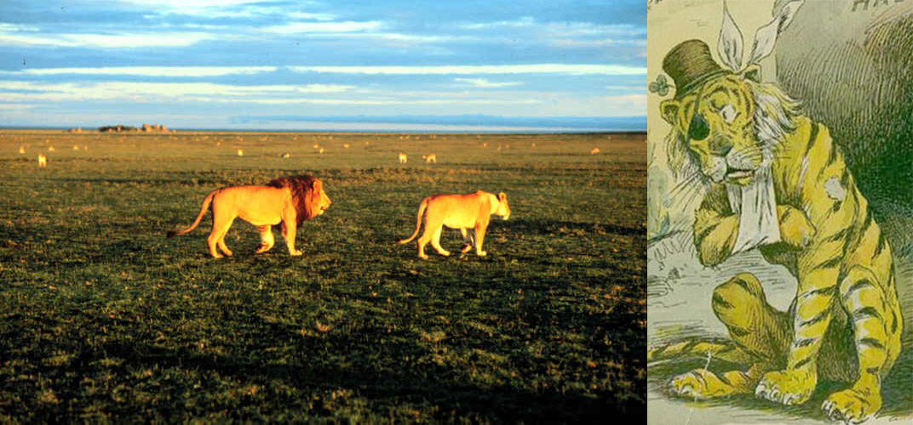
Figure 12.14: Predators satiated versus sick and starving.
12.7 Predator satiation and starvation
In the original Lotka–Volterra formulation, doubling the number of prey in the environment doubles the number of prey taken. The same is true in the equivalent \(r+sN\) formulation explored above. While this may be reasonable at low prey densities, eventually the predators become satiated and stop hunting, as in the image at left in Figure 12.14. Satiation will therefore truncate the predator growth curve at some maximum rate, as at right in Figure 12.15.
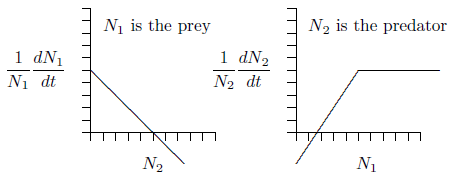
Figure 12.15: Predator growth truncated at a maximum number of prey taken per predator per unit of time.
In the opposite direction, if prey are not available, the predator population starves, as in the sad image at right in Figure 12.14. As indicated by a negative vertical intercept in Figure 12.5 and elsewhere, the population does not reach a maximum rate of decline. In the complete absence of prey, vertebrate predators decline more and more rapidly, reaching extinction at a definite time in the future, as induced by the increasingly large rates of decline shown in the right part of Figure 12.16. This is a different kind of singularity that can actually occur in a finite time.
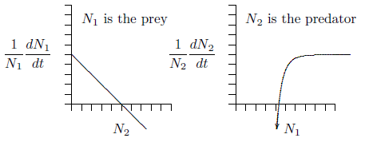
Figure 12.16: Vertebrate predators with asymptotic rates of consumption.
As an exercise and illustration, let us create a predator–prey system in which the predators become satiated and reach a maximum growth rate, but for which there is no maximum death rate in the absence of prey, and see where it leads.
For predators, we want to mimic the shape at right in Figure 12.16. This has the shape of a hyperbola, \(y=1/x\), but reflected about the horizontal axis and shifted upwards. The equation would be \(y=a-b/x\), where \(a\) and \(b\) are positive constants. When \(x\) approaches infinity, the term \(b/x\) goes to zero and \(y\) therefore approaches \(a\). It crosses the horizontal axis where \(x=b/a\), then heads downward toward minus infinity as \(x\) declines to zero. Such a curve has the right general properties.
The predator equation can therefore be the following, with \(r_2\) for \(a\), \(s_{2,1}\) for \(-b\), and \(N_1\) for \(x\).
When there are ample prey \(N_1\) will be large, so the term \(s_{2,1}/N_1\) will be small and the predator growth rate will be near \(r_2\). As prey decline, the term \(s_{2,1}/N_1\) will grow larger and larger without limit and, since \(s_{2,1}\) is less than zero, the predator growth rate will get more and more negative, also without limit.
What about the prey equation? The important point here is that predators become satiated, so the chance of an individual prey being caught goes down as the number of prey in the environment goes up. So instead of a term like \(s_{1,2}\,N_2\) for the chance that an individual prey will be taken, it would be more like \(s_{1,2}\,N_2/N_1\).
In other words, the rate of prey being taken increases with the number of predators in the environment, but is diluted as there are more and more prey and predators become satiated. Eventually, with an extremely large number of prey in the area relative to the number of predators, the effect of predators on each individual prey becomes negligible. This creates the following predator–prey system, which takes satiation and starvation into account:
This system could be criticized because it is not “mass balanced.” In other words, one unit of mass of prey does not turn directly into a specific amount of mass of predators. But this is not a simple molecular system, and it at least fits more closely the realities of predator and prey behavior.
In any case, keep in mind that
\(s_{1,1}\) is less than 0, to reflect limitation of prey due to crowding and other effects;
\(s_{2,2}\) is equal to 0, assuming the predator is limited only by the abundance of prey;
\(s_{1,2}\) is less than 0 because the abundance of predators decreases the growth of prey; and
\(s_{2,1}\) is also less than 0 because as the number of prey decreases there is an increasingly negative effect on the growth of the predator.
The next step is to examine the isoclines for this new set of equations, making a phase-space graph with \(N_1\) on the horizontal axis versus \(N_2\) on the vertical. Where does the prey growth, \(1/N_1\,dN_1/dt\), cease? Working through some algebra, it is as follows:
This predator isocline is simply a vertical line, as before in Figure 12.9 and following figures. But note that the prey curve has the form of an inverted parabola—a hump, as graphed for two cases in Figure 12.17.
Remarkably, this formulation of predator–prey equations closely matches what earlier researchers deduced logically and graphically, when computers were slow or not yet available. If you want to better understand the shape of the prey curve, read Rosenzweig’s 1969 paper entitled “Why the prey curve has a hump.” For interest, his hand-drawn published figure with experimental data points is reproduced in Figure 12.18.
Rosenzweig pointed out a paradoxical effect, which he called “the paradox of enrichment.” At left in Figure 12.17, the prey have a relatively low carrying capacity, with \(K=-r_1/s_{1,1}\) about halfway along the horizontal axis. If you analyze the flow around the red dot that marks the equilibrium point to the right of the hump, or run a program to simulate the equations we just derived, you will find that the populations spiral inward. The equilibrium is stable.
Code
# Prey isocline: a hump N2 = c * N1 * (K - N1), peaking at N2 = 0.5hump <-function(K) { x <-seq(0, K, length.out =101)data.frame(x = x, y =2* x * (K - x) / K^2)}pred_x <-0.4# predator isocline, N1 = -s21/r2enrichment_plot <-function(K, eq_shape) { eq_y <-2* pred_x * (K - pred_x) / K^2ggplot(hump(K), aes(x, y)) +geom_line(colour = eco_cols[["blue"]]) +annotate("segment", x = pred_x, xend = pred_x, y =0, yend =0.9,colour = eco_cols[["red"]], linewidth =0.8) +annotate("text", x = pred_x +0.02, y =0.75, label ="Predator\nisocline",hjust =0, lineheight =0.9, colour = eco_cols[["red"]]) +annotate("text", x =0.03, y =0.6, label ="Prey isocline", hjust =0,colour = eco_cols[["blue"]]) +annotate("point", x =0, y =0, shape =1, size =3, stroke =1, colour ="grey15") +annotate("point", x = K, y =0, size =3, colour ="grey15") +annotate("point", x = pred_x, y = eq_y, shape = eq_shape, size =4,stroke =1.2, colour = eco_cols[["red"]]) +scale_x_continuous(breaks =c(0, K), labels =c("0", expression(-r[1] / s["1,1"])),limits =c(0, 1.1), expand =c(0, 0)) +scale_y_continuous(limits =c(0, 1), expand =c(0, 0)) +labs(x =expression(N[1] ~ (prey)), y =expression(N[2] ~ (predator))) +coord_cartesian(clip ="off") +theme(axis.text.y =element_blank())}enrichment_plot(K =0.5, eq_shape =16) # stable: filled dotenrichment_plot(K =1.0, eq_shape =1) # unstable: open circle
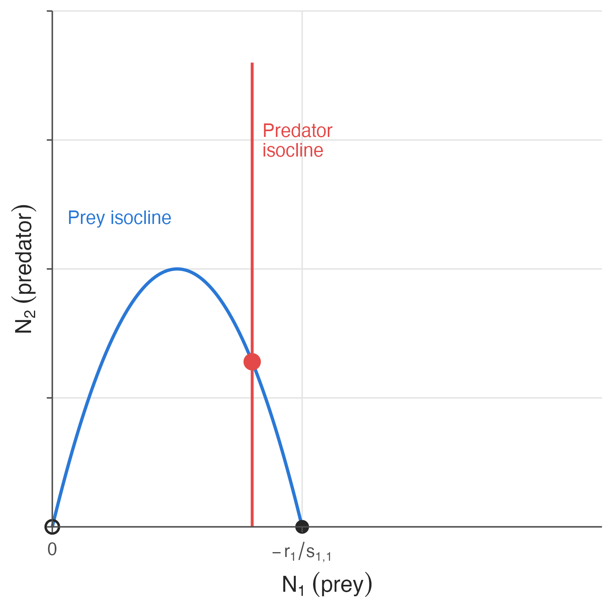
(a) Stable equilibrium
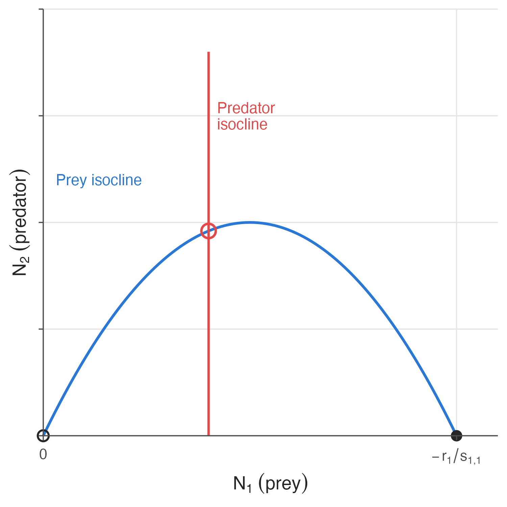
(b) Unstable equilibrium
Figure 12.17: The paradox of enrichment, Rosenzweig, AmNat 1969.
The paradox is this: if you try to improve conditions for the prey by increasing their carrying capacity—by artificially providing additional food, for example—you can drive the equilibrium to the left of the hump, as in the right part of Figure 12.17. Around the equilibrium marked by the red circle, the populations spiral outward. The system has become unstable.
This is a warning from ecological theory. In conservation efforts where predators are present, trying to enhance a prey population by increasing its carrying capacity could have the opposite effect. This is not to say that efforts to enhance prey populations should not be undertaken, only that they should proceed with appropriate caution and study.
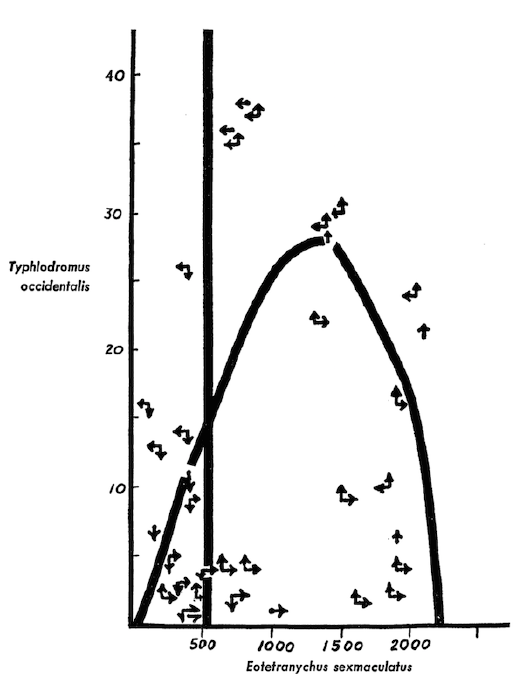
Figure 12.18: Rosenzweig’s original 1969 graph with phase-space arrows, interpreting Huffaker’s 1958 experiments with mites.
12.8 Effects of space
In predator–prey systems, especially in confined areas, the predator tends to capture all the prey and then starve, so the systems “crash.” But over large areas it is conceivable that a predator can completely wipe out its prey in one area and not go extinct, because it can simply move to another area where the prey still exist. Prey can then repopulate the area from which they had been depleted.
Imagine a series of interconnected cells where, with some restrictions, predator and prey can migrate between adjacent cells. Now, even though the system may be locally unstable and crash in individual cells, the entire system across all cells could be stable and persist indefinitely.
In the 1930s the Russian ecologist Gause conducted a very famous set of early experiments on competition among protozoa, but he also studied predation of Didinium on Paramecium. The populations he set up would commonly crash and go extinct, with the Didinium eating all the Paramecia and then finding themselves without food. If he made places for the Paramecium prey to hide, however, the systems could persist for many cycles.
In the 1960s Krebs noticed that populations of fenced mice, even those with a full half-acre within the fence, would crash and disappear after grossly overgrazing their habitat. But in areas where they were allowed to disperse, the populations would persist.
Huffaker also ran extensive experiments, again in the 1960s, with mites and oranges. A single population of mites on a single orange would crash and the whole population would disappear. Using multiple oranges with limited migration paths between them, however, allowed the system to persist for many generations.
And in the 1970s Luckinbill did similar work with protozoa in aquatic tubs—larger and larger tubs holding miniature predator–prey systems. He found that the larger the tub, the longer the system persisted.
The point to remember here is that the mere presence of spatial structure, in one form or another, can allow a predator–prey system to persist. The basic reason is simply that species can go extinct in some areas while continually recolonizing other areas, always maintaining a population that blinks in and out locally, but persists globally.